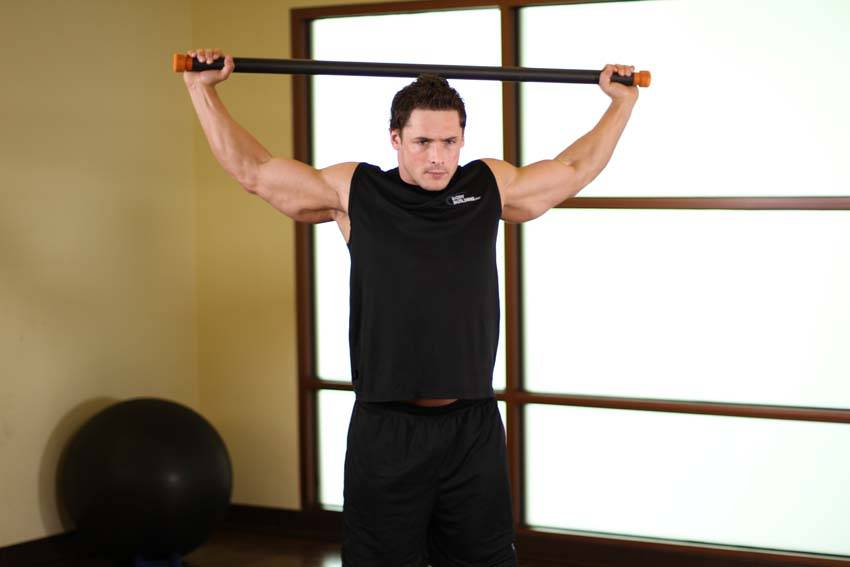

- Start off by standing with your legs together, holding a bodybar or a broomstick.
- Take a slightly wider than shoulder width grip on the pole and hold it in front of you with your palms facing down.
- Carefully lift the pole up and behind your head.